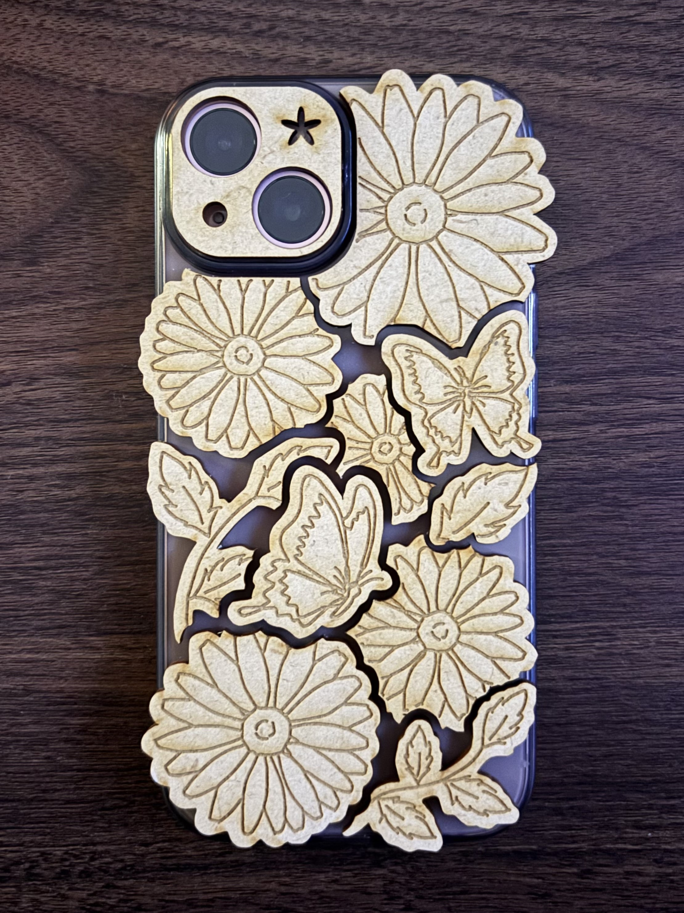
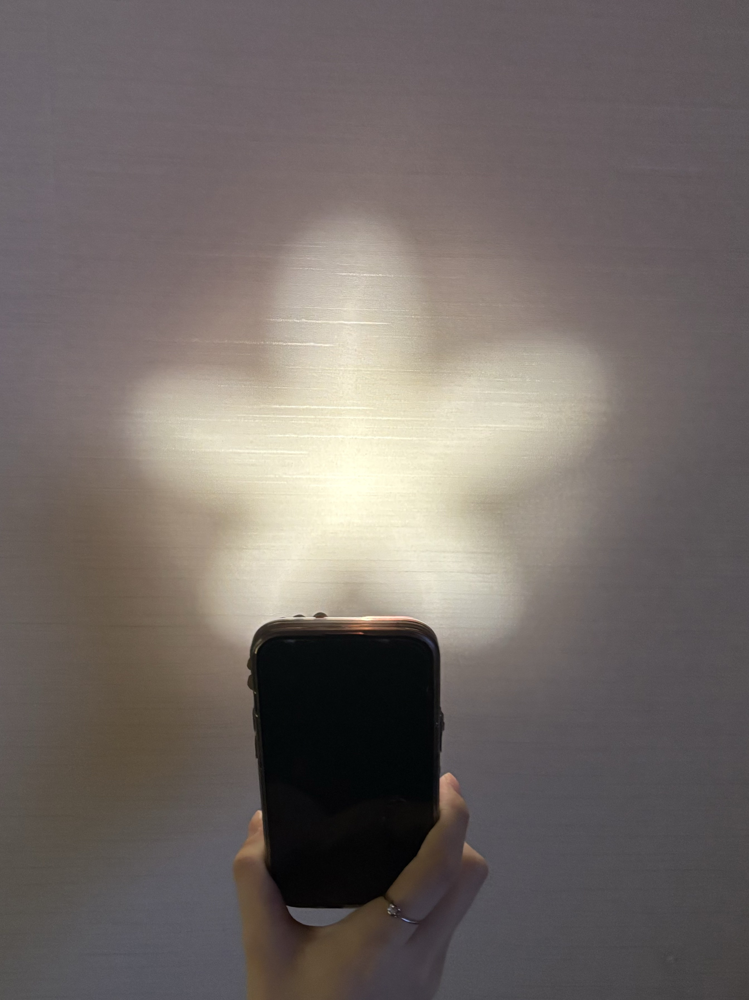
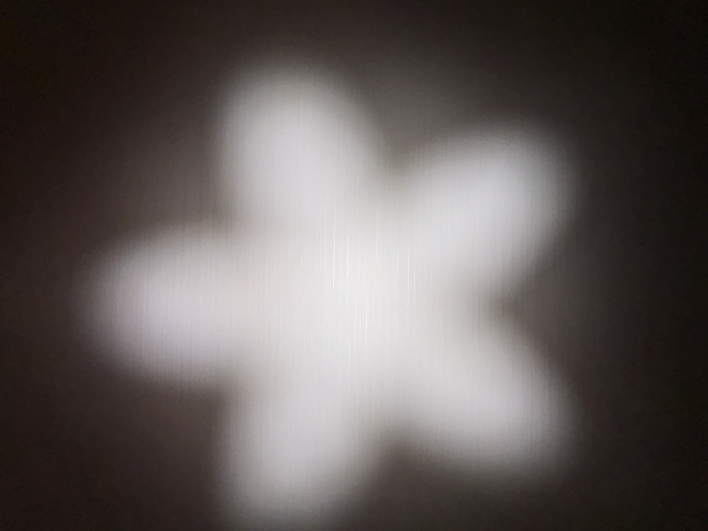
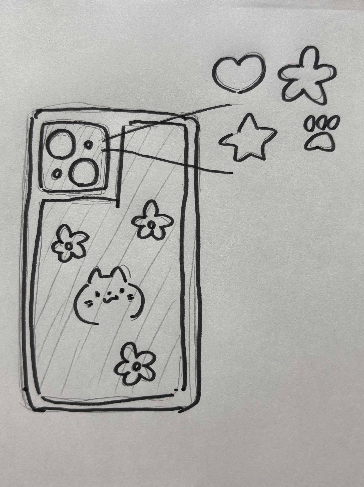
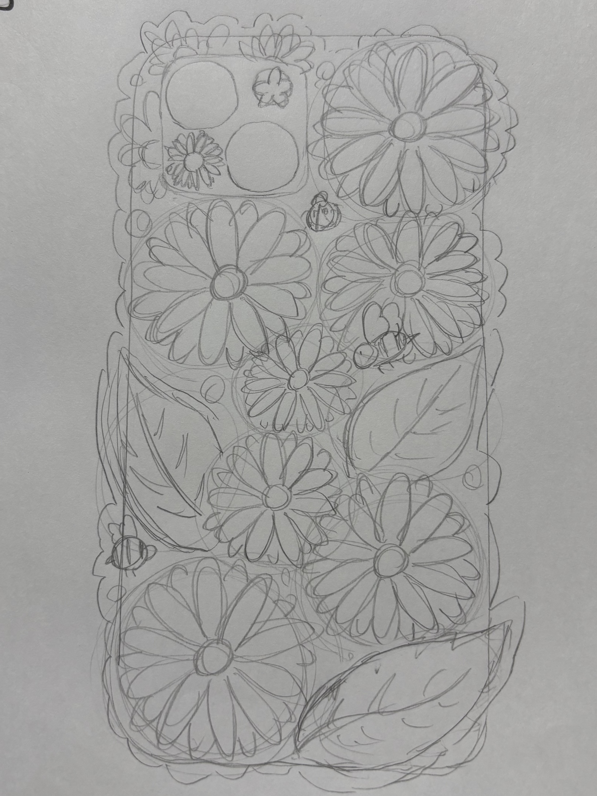
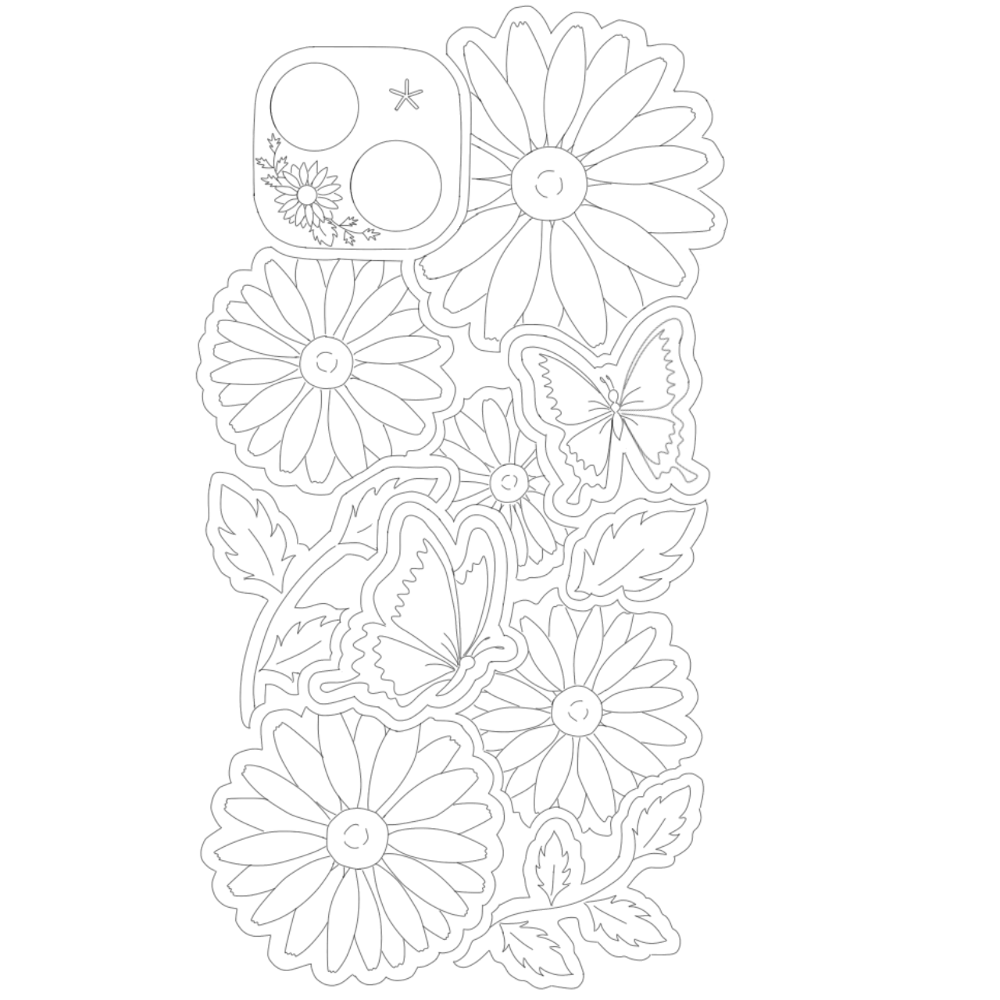
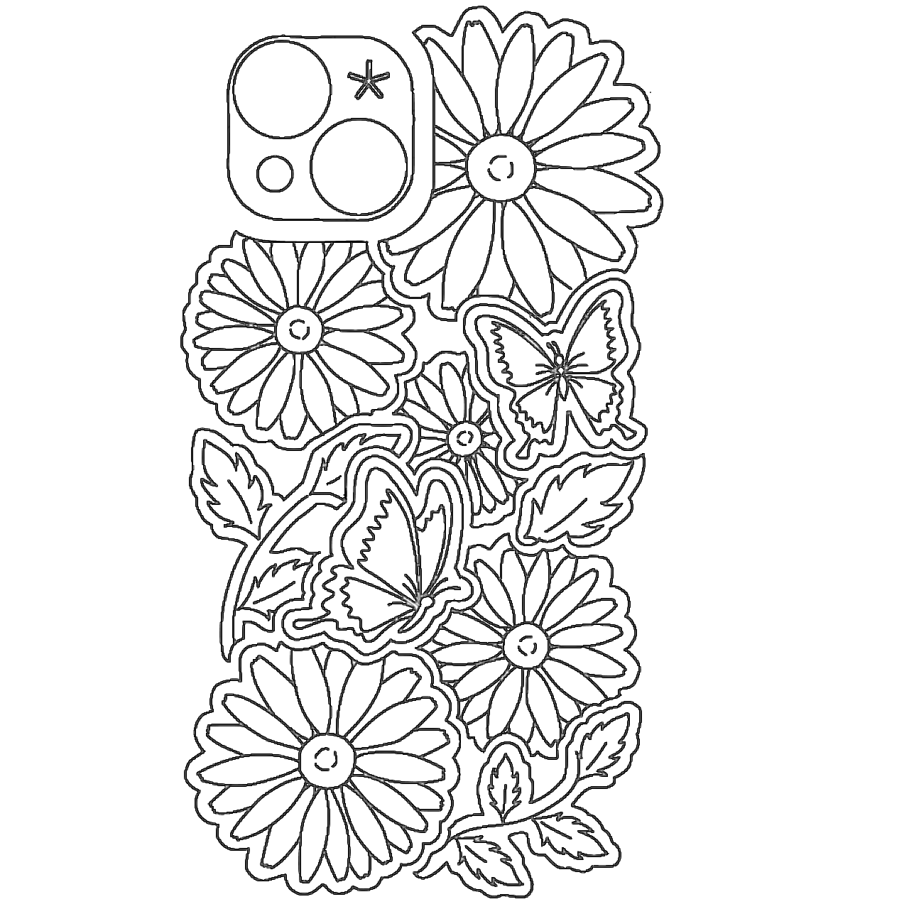
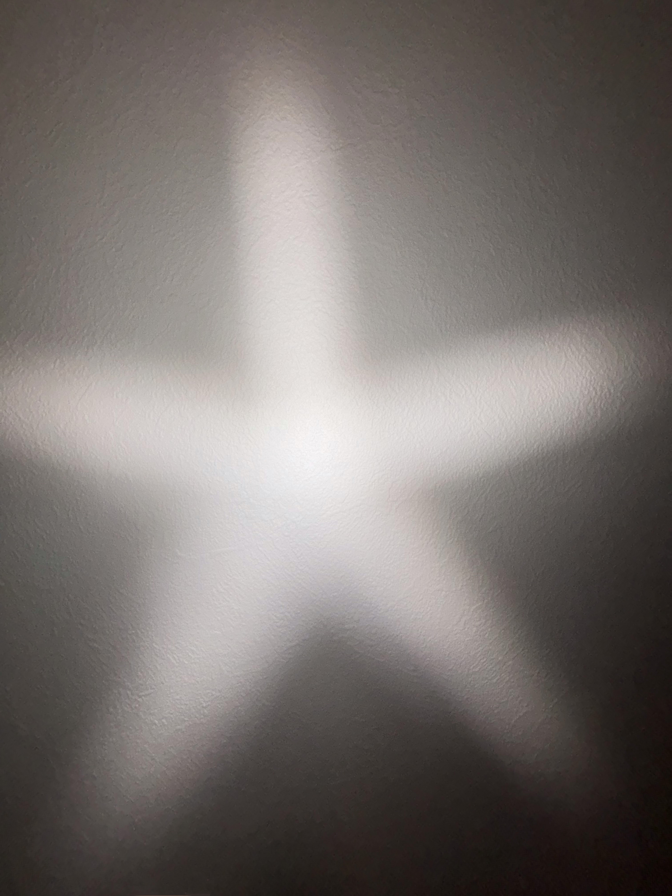
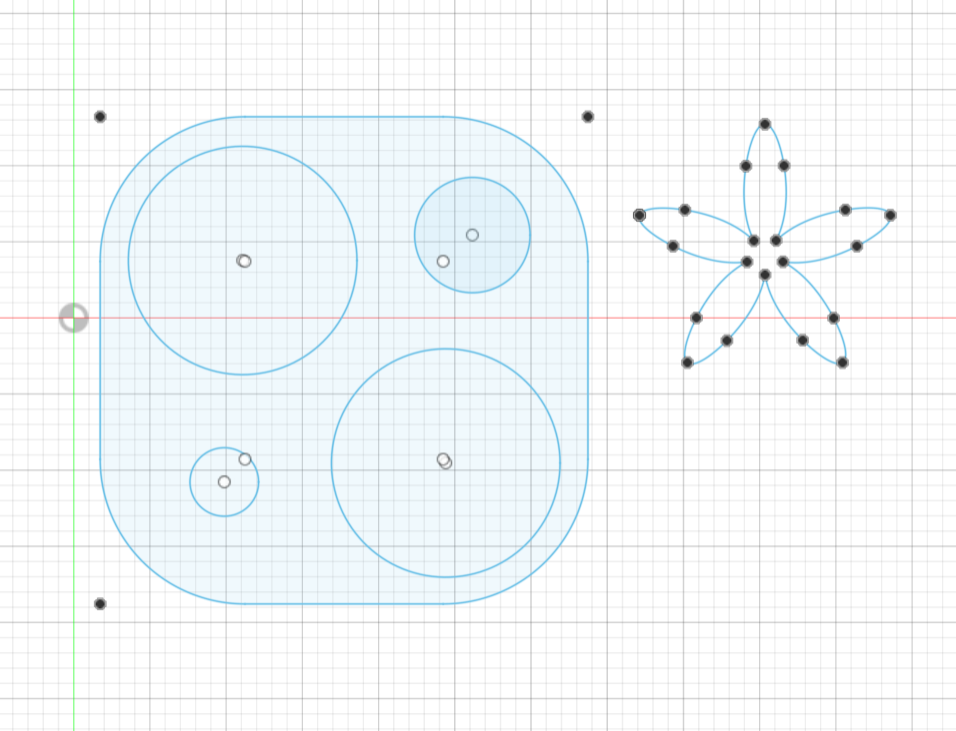

花柄スマホケース
完成品



作品説明
花や蝶などが彫刻してあるパーツを市販のスマホケースと組み合わせた作品。
ライトの部分が花型にカットしてあり、ライトをつけると花型に光る。フラッシュ撮影でもきれいに花型に写る。
対応機種はiphone15
スマホケースとしての実用性より、心を動かせるようなデザイン性を意識して制作した。
花型に光るライトは照らすことができる範囲が狭くなるし、花や蝶のパーツは少しはみ出ているため持ちにくさを感じるかもしれない。
しかし、この不便さが逆にいつも使うスマートフォンに特別感を与えてくれるのではないかと思う。
スケッチ


制作過程


最初からIllustratorで制作をしようと思ったが、まだ使いこなせず時間が限られていたため、今回はiPadで絵を描き、Illustratorで画像をトレースした。
トレースしたい画像の線が細すぎるとIllustratorが線として認識しなかったため調整した。


レンズカバーの部分は絵を描いたもので作った際に、ライト部分がいびつな形になってしまった。きれいな花型にするため、ここではfusionを利用し、大きさの調整はIllustratorで行った。
svgファイル